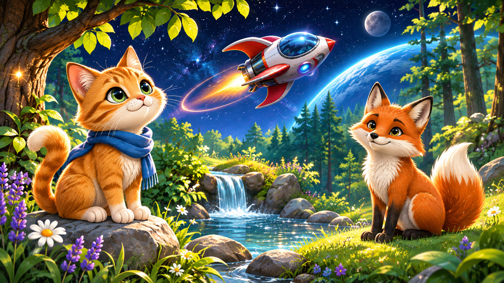

← До курсу PyGame Zero Урок 4 із 10 · З фігури — до персонажа
Додаємо зображення: актори й PNG Додаємо власний PNG у ресурси проєкту, створюємо Actor і розміщуємо персонажа на сцені.

🎯 Що навчимося робити Зрозуміти, як підготувати PNG, імпортувати його та показати через Actor.
Працюємо крок за кроком Завантажте cat.png з бібліотеки нижче або виберіть іншого готового персонажа. У PGZ Studio відкрийте «Імпорт ресурсів» і додайте зображення до проєкту. У файловій структурі Pygame Zero зображення зберігають у теці images. Збережіть назву cat.png. У коді звертайтеся до нього як Actor("cat") — без .png. Запустіть проєкт. Якщо зображення не з’явилося, звірте назву файлу та його розташування. Як перейти від сторінки до запуску коду Натисніть «Копіювати код» і скопіюйте приклад. Відкрийте ePython , вставте код у редактор і натисніть «Виконати». Для графічного вікна PyGame Zero та імпорту PNG відкрийте PGZ Studio . У ній є кнопки «Виконати» й «Імпорт ресурсів». Код зберігається у браузері; за потреби скористайтеся кнопкою збереження у самому середовищі. ⌨️ Код для дослідження Скопіюйте код, відкрийте середовище та змініть хоча б одне значення. Порівняйте результат.
Python · PyGame Zero Копіювати код
import pgzrun
WIDTH = 600
HEIGHT = 400
hero = Actor("cat")
hero.pos = (300, 200)
def draw():
screen.fill((225, 240, 255))
hero.draw()
screen.draw.text("Мій перший Actor — кіт", (20, 20), color="navy", fontsize=28)
pgzrun.go()🎨 Готові ресурси для Вашої гри Оберіть персонажа. Усі зображення вже підготовлені: невеликі файли, правильні назви, PNG із прозорим фоном. Для прикладу уроку потрібен cat.png .
📁 У PGZ Studio імпортуйте зображення через «Імпорт ресурсів». Персонажі мають бути доступні як зображення, а фони — як ресурси images. У звичайному проєкті Pygame Zero покладіть файли в теку images. У Actor("cat") не пишіть розширення файлу. Для фону використовуйте screen.blit("garden", (0, 0)) після імпорту garden.jpg, якщо середовище підтримує JPG; за потреби перетворіть фон на PNG.
⬇ Завантажити всі ресурси (ZIP)
🎮 Три мініпроєкти на вибір Оберіть один із трьох. У кожному є заготовка, яку потрібно дописати. Завдання цього уроку — створювати Actor, імпортувати PNG та керувати розташуванням персонажа. Керування клавіатурою вивчатимемо пізніше.
1. Кіт у саду Допоможіть котові дослідити сад. Налаштуйте розташування персонажа та створіть власну сцену.
⬇ Персонаж · ⬇ Фон
⌨️ Відкрити заготовку коду Копіювати заготовку import pgzrun
WIDTH = 600
HEIGHT = 400
cat = Actor("cat")
cat.pos = (300, 200) # TODO: змініть координати
def draw():
screen.fill((225, 240, 255))
# TODO: за бажанням додайте фон: screen.blit("garden", (0, 0))
cat.draw()
# TODO: додайте назву своєї гри
screen.draw.text("Моя гра", (20, 20), color="navy", fontsize=30)
pgzrun.go()Що дописати Імпортуйте cat.png та garden.jpg у ресурси проєкту. Розмістіть кота спочатку ліворуч, а потім у центрі. Змініть розмір персонажа через параметр scale, якщо середовище його підтримує; інакше підготуйте інший розмір PNG. 2. Космічна експедиція Створіть космічну сцену з кораблем, який очікує на старт.
⬇ Персонаж · ⬇ Фон
⌨️ Відкрити заготовку коду Копіювати заготовку import pgzrun
WIDTH = 600
HEIGHT = 400
ship = Actor("ship")
ship.pos = (300, 200) # TODO: змініть координати
def draw():
screen.fill((225, 240, 255))
# TODO: за бажанням додайте фон: screen.blit("space", (0, 0))
ship.draw()
# TODO: додайте назву своєї гри
screen.draw.text("Моя гра", (20, 20), color="navy", fontsize=30)
pgzrun.go()Що дописати Імпортуйте ship.png та space.jpg. Розмістіть корабель у нижній частині екрана. Додайте напис із назвою експедиції та змініть позицію корабля. 3. Лисиця в лісі Лисиця з’являється на лісовій галявині. Створіть композицію з персонажем.
⬇ Персонаж · ⬇ Фон
⌨️ Відкрити заготовку коду Копіювати заготовку import pgzrun
WIDTH = 600
HEIGHT = 400
fox = Actor("fox")
fox.pos = (300, 200) # TODO: змініть координати
def draw():
screen.fill((225, 240, 255))
# TODO: за бажанням додайте фон: screen.blit("forest", (0, 0))
fox.draw()
# TODO: додайте назву своєї гри
screen.draw.text("Моя гра", (20, 20), color="navy", fontsize=30)
pgzrun.go()Що дописати Імпортуйте fox.png та forest.jpg. Розмістіть лисицю праворуч від центру. Додайте підпис та змініть координати персонажа. ✅ Перевірте свій результат
🏆 Додатковий виклик: створіть другого актора з іншого PNG і розмістіть його так, щоб персонажі не перекривали один одного.
🧩 Перевір себе інтерактивно Завдання У коді записано Actor("hero.png"), а файл у ресурсах називається hero.png. Що слід виправити?
Показати підказку Спочатку файл має потрапити до проєкту; лише потім код може знайти його за назвою.
Показати відповідь У виклику Actor пишемо ім’я без розширення: Actor("hero"). Переконайтеся, що файл імпортований у теку images або ресурси середовища.
Розташуй кроки за порядком Перетягніть картки або натискайте ↕, щоб змінити їхнє місце.
↕ Запустити й перевірити сцену
↕ Створити Actor з ім’ям файла без .png
↕ Імпортувати його в ресурси проєкту
↕ Підготувати PNG-файл
Перевірити порядок
 Кіт
Кіт Корабель
Корабель Лисиця
Лисиця